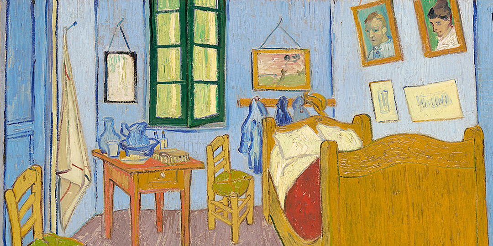
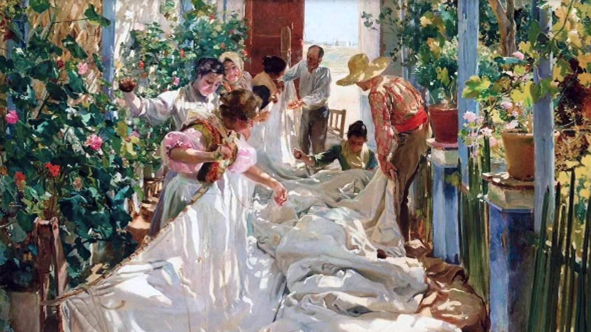
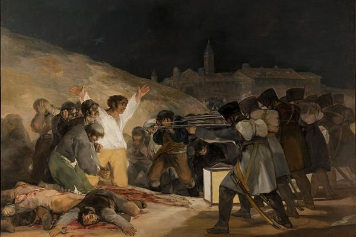

Ha día de hoy estamos rodeados de arte, sin darnos cuenta somos parte de la historia del arte y cada vez lo somos más gracias a nuestra forma de evolucionar y de crear.
Antes de comenzar a hablar sobre el arte actual debemos de saber que es el arte: El arte es una forma de expresión humana creativa y consciente que utiliza recursos plásticos, lingüísticos, sonoros o corporales para interpretar la realidad o la imaginación. A través de obras estéticas, simbólicas o conceptuales, el arte transmite emociones, ideas y percepciones, sirviendo como un medio de comunicación, reflexión social y terapia.
Una vez sabido la base del significado del arte, que artistas conocemos: Monet, Van gogh, Leonardo Da vinci, Joaquin Sorolla, Goya, Velazquez, etc... Aprendamos de estos artistas algo más.
Monet: Claude Monet fue un pintor francés, uno de los creadores del impresionismo. El término impresionismo deriva del título de su obra Impresión, sol naciente.Sus trabajos iniciales, realizados hasta mediados de la década de 1860, se inscriben dentro del realismo.
Van Gogh: Vincent Willem van Gogh fue un pintor neerlandés, uno de los principales exponentes del postimpresionismo.Pintó unos 800 cuadros y realizó más de 1600 dibujos.

Leonardo Da Vinci: Leonardo di ser Piero da Vinci,más conocido como Leonardo da Vinci, fue un polímata florentino del Renacimiento italiano. Fue a la vez pintor, anatomista, arquitecto, paleontólogo, botánico, escritor, escultor, filósofo, ingeniero, inventor, músico, poeta y urbanista.
Joaquin Sorolla: Joaquín Sorolla y Bastida fue un pintor español. Artista prolífico, dejó más de 2200 obras catalogadas. Su obra madura ha sido etiquetada como impresionista, postimpresionista y luminista.

Goya: Francisco José de Goya y Lucientes fue un pintor y grabador español. Su obra abarca la pintura de caballete y mural, el grabado y el dibujo.

Velázquez: Diego Rodríguez de Silva y Velázquez, conocido como Diego Velázquez, fue un pintor barroco español considerado uno de los máximos exponentes de la pintura española y maestro de la pintura universal.